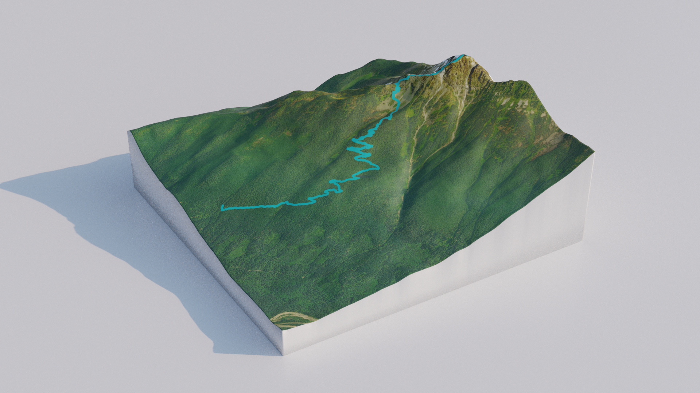

3D Printed Topology Maps
Posted on Fri 02 August 2019 in projects

I have been wanting to make a full color topographic map for quite a few years now, ever since I ran across This instructable. I had half heartedly attempted to follow those instructions, but ran into some issues with the required software and quickly gave up. Recently I went on a few hikes with some family and wanted to give them something to remember it by, so I decided to finally follow through on this project.
The above tutorial is a bit outdated, as some of the required tools are no longer available. The following process is what worked for me, and all the tools are free and open source!
Instructions
1. QGIS
Download and install QGIS.
Add the basemap
Add the QuickMapServices plugin.
Setting the basemap sets the style of your map, there are a bunch of options but here are some good ones:
Google Roadmap: http://mt0.google.com/vt/lyrs=m&hl=en&x={x}&y={y}&z={z}
Google Terrain: http://mt0.google.com/vt/lyrs=p&hl=en&x={x}&y={y}&z={z}
Google Altered Roadmap: http://mt0.google.com/vt/lyrs=r&hl=en&x={x}&y={y}&z={z}
Google Satellite Only: http://mt0.google.com/vt/lyrs=s&hl=en&x={x}&y={y}&z={z}
Google Terrain Only: http://mt0.google.com/vt/lyrs=t&hl=en&x={x}&y={y}&z={z}
Google Hybrid: http://mt0.google.com/vt/lyrs=y&hl=en&x={x}&y={y}&z={z}
Open Topo: https://tile.opentopomap.org/{z}/{x}/{y}.png
Esri Topo: https://server.arcgisonline.com/ArcGIS/rest/services/World_Topo_Map/MapServer/tile/{z}/{y}/{x}
Esri Satellite: https://server.arcgisonline.com/ArcGIS/rest/services/World_Imagery/MapServer/tile/{z}/{y}/{x}
If things look gross or stretched you might need to select a different CRS, look here.
Add tracks, waypoints, other points of interest
Layer → Add Layer → Add Vector Layer... (CTRL+SHIFT+V) and select the GPX file. Select the track and click Add. Double click on the new layer or right click and select Properties.... Adjust the line color and width under Symbology.
Create print layout
CTRL+P to add new print layout. Right click on background, select Page Properties..., adjust width and height. Add Item → Add Map. Move item content and adjust map bounds. Layout → Export Image... → save as PNG → adjust DPI (500 seems good enough) → check Generate world file → Save.
2. Blender
Download and install Blender and the BlenderGIS add on.
Select all objects (A) and delete (X). GIS → Import → Georeferenced raster → select exported PNG. GIS → Web geodata → Get SRTM. Add a displacement modifier and the strength to 1/10000. Add a subdivision modifier to the plane for more resolution (can have weird Z warping sometimes). Default looks good but isn't verified, shouldn't need to go over 3 or 4. Apply both modifiers. Scale the model to XY size desired by copying the current X or Y dimension, highlighting all of the scale fields, typing the desired dimension and then divide by the current dimension. Edit the mesh to add thickness and walls. Check normals are correct and merge vertices. Export to collada, check Copy and Only Selected Map under Texture Options.
3. Print
Send the files out to your favorite print shop (shapeways can do full color sandstone, which is what I used here). Optionally mount it in something (I chose some scrap oak I had) and enjoy :)